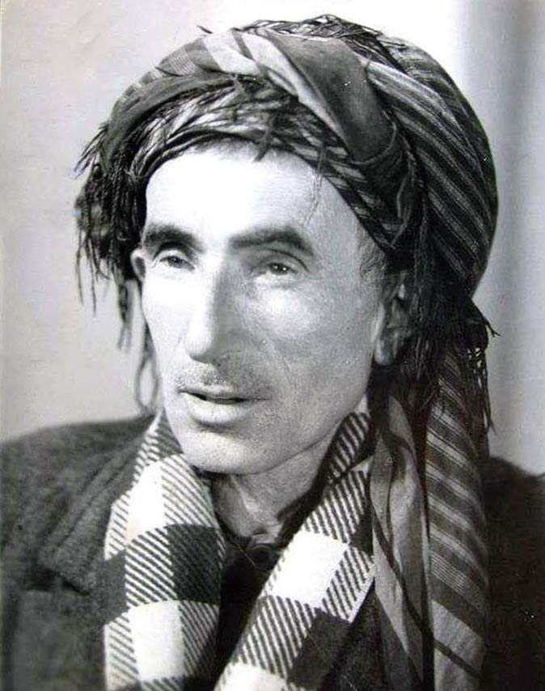

قانع

محەممەد کابولی یان قانع (١٨٩٨ – ١٩٦٥) شاعیرێکی بەناوبانگی کورد بووە.
بەھۆی شیعرەکانییەوە بە «شاعیری چەوساوەکانی کوردستان» ناوبانگی دەرچووە.[١] شیعرەکانی قانع ھەوێنی بیرێکی پێشکەوتووخوازانەن.
سەرەتای ژیان
قانع (ناوی تەواو: محەممەد کوڕی شێخ عەبدولقادر کوڕی شێخ سەعیدی دۆڵاشی) باوکی لە شێخانی کۆنەپۆشیی شاری مەریوان و دایکی کە ناوی ئامینە بووە لە شێخانی کەوڵۆس بوو.
ساڵی ١٨٩٨ لە گوندی ڕیشێنی لە شارەزوور لە دایک بووە. دوای ئەوەی دەرەبەگەکانی ناوچەی مەریوان باوکی ئەم شاعیرە ئاوارە دەکەن،
بەدەم لێقەوماوییەوە قانع وەکو مناڵی دەربەدەرێک لە ڕۆژی ١٥ی ئەیلولی ساڵی ١٨٩٨ی زایینی لە گوندی ڕیشێن[٢] لە بناری شارەزووری مەریوان لە دایک بووە بەو حاڵەشەوە
کڵۆڵی دەستی لە یەخەی نەکردەوە، لە تەمەنی ٤٠ ڕۆژیدا باوکی کۆچی دوایی دەکات و تازە پێ دەگرێت کاتێک دایکیشی کۆچی دوایی دەکات، مامەکانی نازی دەکێشن.
قانع سەبارەت بە زێدی خۆی وا دەڵێت:
موحەممەد (کابولی)م ئەمما تەخەللوس (قانع)م ناوە
لە ئەسڵا خەڵکی دۆڵاشم، مەریوان جێگەی ئەژدادم
کە «دۆڵاش» گوندێک بووە لە نزیکی شاری مەریواندا.
تۆماری ژیانی ئەم مناڵە
مەینەت دۆستە لە زەمینەیەکی دەربەدەری و پڕ لە کوێرەوەرییەوە دەستی پێ کرد، شەرم نییە ئەگەر بڵێین ڕۆژان لە نێو مناڵاندا و شەوان لەسەر تەنوور ژیانی بەسەر دەبرد.
تا ماوەیەک ئینجا بە ھۆی خزمێکی دووریانەوە کە ناوی (ئاغا سەید حسێن) و خەڵکی دێی چۆڕ دەبێت لە ناوچەی مەریوان پێ دەنێتە زەمینەی ژیانێکی ترەوە، ئاغا سەید دەیباتە لای خۆی و
لە حوجرە دەینێرێتە بەر خوێندن. بەر لەوەی بە تەواوی فێری نووسین و خوێندن ببێت جار و بار شیعری سەرزەنشتیی دادەنا و ھەر ئەمەش بووە بنچینەی شاعیرێتی دوا ڕۆژی.
قانع لە کاتی بێ ئیشیدا خۆی بە خوێندنەوە و
بابەتی وێژەییەوە دەبردە سەر، شیعر لەو کاتەدا شەوچەرەی کۆڕی شەوانە و کەرەستەی ڕۆشنبیرەکانی جەماوەر دەبێت، بۆیە ئەمیش یەکێک دەبێت لە سەوداسەرەکانی بازاڕی شیعر.
کە ئاگری شەڕی جیھانیی یەکەم گەیشتە ناوچەی مەریوان، لەبەر ئەوەی کە لایەنی ئایینی لە شەڕەکەدا بەھێز بوو، زۆربەی ڕۆشنبیرە
ئایینییەکانی ئەو سەردەمەی ناوچەکە ڕاستەوخۆ تێکەڵاوی شەڕەکە بوون و خەڵکێکی زۆریان ڕاپێچی ناو شەڕەکە کرد.. بێ ئەوەی لە ستراتیژییەتی شەڕەکە و لایەنە سیاسییەکان و نیازی
ئیمڕیالیزم
و مەبەستەکانی بگەن. ئەمیش یەکێک دەبێت لەو کۆمەڵە ڕۆشنبیرە ئایینیانەی ئەو سەردەمەی ناوچەکەیان و وەکو یەکێک لەوان بەشداری شەڕەکە دەکات.. لایەنی بە ئایین بۆیاخکراوی
شەڕەکە گەلێک کار دەکاتە سەر ڕێبازی بیرکردنەوەی بۆیە ئەو سەرەتا شیعرییەی کە لەسەر شیعری سەرزەنشتکاری دامەزرابوو بەجێ دەھێڵێت و ڕوو دەکاتە شیعری ئایینی و خواپەرستی.
کە شۆڕشی ئۆکتۆبەری سۆشیالیستی بە پێچەوانەی تای کێشی سیاسی ئەنجامی شەڕەکەی بە بارودۆخێکی سەر بە قازانجی زۆربەی گەلانی
ناوچەکە کێشایەوە، سەرەتای بیرکردنەوەیەکی نوێ لە ژیانی ڕۆشنبیری شاعیردا سەری ھەڵدا.. دوا ئەوە جارێکی تر دەست دەکاتەوە بەخوێندن، ئینجا ھەوای گەڕان بە شارەکانی کوردستاندا
دەبێتە
خولیای، ھەر بۆیە بۆ خوێندن سنە، مەھاباد، شنۆ، ھەولێر، کۆیە، کەرکووک، سلێمانی و بیارە گەڕاوە. دوا قۆناغی خوێندنی دێنێتەوە بۆ مەریوان و ئینجا بە یەکجاری دەستی لێ ھەڵدەگرێ.
ژیانی لاوێتی
ئەم بەشە
ئاماژەی بە ھیچ سەرچاوەیەک نەداوە. تکایە بە دانانی ئاماژە بۆ سەرچاوە بڕواپێکراوەکان، ئەم بەشە باشتر بکەن. دەقە بێسەرچاوەکان لەوانەیە داوای سەرچاوەیان لێ بکرێت یان لاببرێن.
لە سەرەتای لاوێتیدا دووچاری نەخۆشی تەنگەنەفەسی دەبێت و تا دێت لێی زیاد دەکات لە ئەنجامدا ھەر بەو ئازارەش سەری نایەوە.
ئەو ناکۆکییە خێڵەکییانەی نێوان بنەماڵەی شاعیر و دەرەبەگەکانی ناوچەی مەریوان ڕۆژ لە دوای ڕۆژ لەناو جموجۆڵی فیکری شاعیردا زیادی دەکرد. ئەمە لە لایەک، لە سەرەتای
بیستەکانیش بە دواوە کە ناو بە ناو ھەواڵی پەیوەندی سیاسییانەی توندوتۆڵی ھاریکاری نێوان کۆڕ و کۆمەڵ و تاقمە سیاسییکانی ئەو سەدەمەی باکووری کوردستان و کەمالییەکان دەگەیشت
بێ ئارامی خۆی شیعری دادەگرت.. دیسانەوە لە لایەکی تریشەوە سەرکەوتنی شۆڕشە مەزنەکەی ئۆکتۆبەر و سەرەتای بڵاوبوونەوەی بیر و باوەڕی پێشکەوتووخوازانەی دژ بە فاشیزم لە
نێو توێژ و کۆمەڵە خوێندەوارەکاندا، ئەمانە ھەموو زەمینەیەکی نیشتمان پەروەرانە و نەتەوایەتییانەیان خولقاندبوو، وە پاشگەزبوونەوەی کەمالییەکان بەرانبەر مەسەلەی کورد و بەرپابوونی
شۆڕشە ناوبەناو پچڕاو و یەک لەدوای یەکەکانی باکووری کوردستان (ئاگری داخ) بیر و باوەڕی زۆربەی لاوە خوێندەوارەکانی خستە بەر مەودایەکی نەتەوایەتی و نیشتمانیانەی کاریگەر.
لەو کاتەدا کە سەرەتای شاعیرێتی شاعیر بوو زۆر بە گورجی باری سەرنج و شێوەی ناوەڕۆکی
شیعرەکانی لە دڵداری و ئایینییەوە گۆڕدران بۆ نیشتمانپەروەرێتی. وەک خۆی چەند جارێک لە پێشەکی دیوانە شیعرەکانی سەردەمی خۆیدا باسی کردووە و لە چەند لایەکی تریشەوە لێی دواوە؛
کتێبێکی دەستنووسی فارسی بە ناوی (وقایق الاردەلان)ی دەست دەکەوێت کە باسی ڕاپەڕینەکانی تیرەی ئەردەڵانییەکان دەکات بەرانبەر داگیرکەران، ئەمیش ئەوەندەی تر کار دەکاتە سەر
دیوی ناوەوەی شاعیر و بەرھەمە شیعرییەکانی کە لێرەدا بە تەواوی قۆناغی شیعری دڵداری جێ دەھێڵێت و شاعیر دوای ئەو قۆناغە دەبێتە شاعیرێکی نەتەوایەتی و نیشتیمانپەروەر